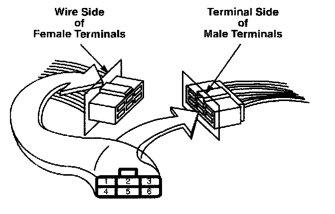
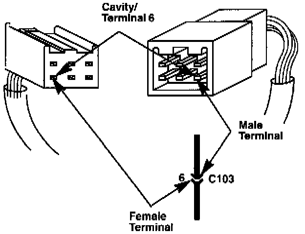
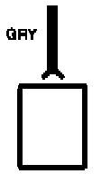
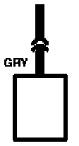
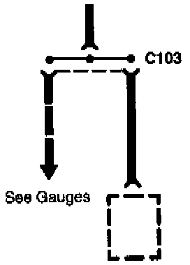

Connectors

The cavities (and wire terminals) in each connector are numbered starting from the upper left, looking at the male terminals from the terminal side (or looking at the female terminals from the wire side. Both views are in the same direction so the numbers are the same.) All actual cavities are numbered, even if they have no wire terminals in them.
Connectors-"C":

The connector cavity number is listed next to each terminal on the circuit schematic. The cavity/terminal shown here is #6.
Connectors-"C":

This means the connector connects directly to the component.
Connectors-"C":

This means the connector connects to a lead (pigtail) wired directly to the component.
Connector:

This symbol represents one bus inside the cap of a junction connector. A junction connector cap contains several buses, but only the one affecting that circuit will be shown. The dots represent tabs on the bus that the wire terminals connect to. Remaining wires to the same bus are represented by a broken line.